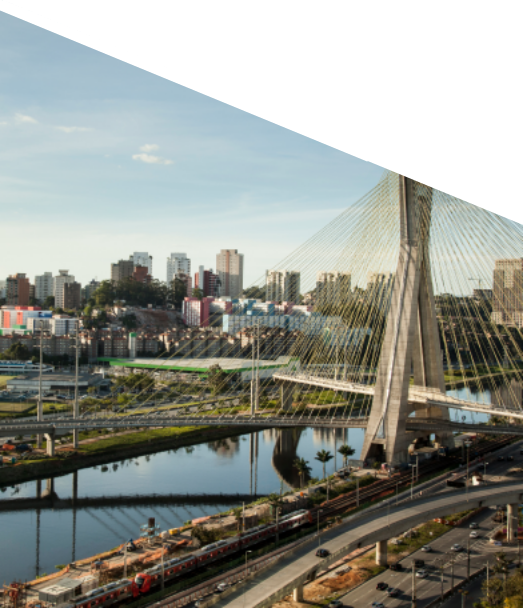
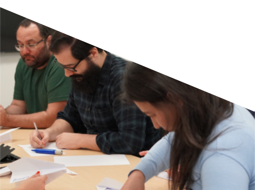
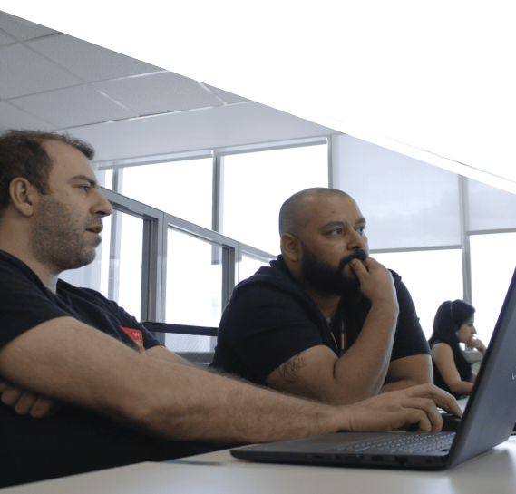

ANNUAL
REPORT
FY 2024
ANNUAL
REPORT
FY 2024
Promon S.A.
Founded in 1960, Promon S.A. is a holding company with a portfolio of companies operating in the engineering, Information and Communication Technology (ICT), and efficiency and digital transformation markets. With a unique profile, its shareholders consist of both current and former professionals from the Organization.
The Promon S.A. holding includes:
FY 2024 HIGHLIGHTS*
*FY 2024 refers to the fiscal year beginning on April 1, 2023, and ending on March 31, 2024.
-
Promon S.A.
-
BRL 3.9 million
in profit in the consolidated result -

BRL 1.37 billion
in management revenue -
3.398
professionals
 -
-
Promon Engenharia
-
BRL 281 million
in sales -
BRL 271 million
in gross revenue -
418
professionals -
Customer satisfaction rates
73 NPI and 84 percent General Satisfaction Index
 -
-
Logicalis
Latin America*-
BRL 2.8 billion
in sales -
BRL 3.3 billion
in gross revenue -
1,853
Latam professionals -
1,169
Brazil professionals -
* Logicalis' fiscal year encompasses the period between March 1, 2023 and February 29, 2024.
 -
Fundação Promon de Previdência Social (FPPS)
Pension plans
Promon MultiFlex
Defined contribution modality
Promon BásicoPlus
Defined benefit modality
Results in 2023
BRL 1,9 billion
in total investments from both plans
BRL 124,5 million
in benefits paid to the 759 assisted participants
BRL 22,4 million
received in social security contributions from 1,469 active and self-sponsored participants
ESG at Promon
Explore the key environmental, social, and governance initiatives undertaken by Promon S.A.
companies during FY 2024.
- Establishment of the Sustainable Development department to drive the integration of the ESG strategy across processes and business operations.
- Implementation of ESG Meetings to assess the ESG potential of each new project that enters the Company.
- Creation of three affinity groups with a high level of employee participation and engagement: Racial and gender equity; LGBTQIA+, and Parenting.
- Completion of the Company's initial mapping of greenhouse gas emissions.
- First acquisition of Certified Emission Reductions (CERs), equivalent to 348 tons of CO2.
- Decarbonization initiatives, including carbon emissions monitoring, neutralization efforts, and transportation via electric vehicles.
- Reverse logistics processes for sustainable disposal of electronic waste.
- Launch of the LogiBrave affinity group (PwD + neurodiverse), following other existing groups: LogiPride (LGBTQIA+), LogiWomen (women) and LogiBold (black and brown people).
- Inclusion of the topic of diversity and inclusion in the Company's internal satisfaction survey.
- Establishment of a partnership with the Business Initiative for Racial Equality.
ESG na Promon
Explore the key environmental, social, and governance initiatives undertaken by Promon S.A. companies during FY 2024.
- Establishment of the Sustainable Development department to drive the integration of the ESG strategy across processes and business operations.
- Implementation of ESG Meetings to assess the ESG potential of each new project that enters the Company.
- Creation of three affinity groups with a high level of employee participation and engagement: Racial and gender equity; LGBTQIA+, and Parenting.
- Completion of the Company's initial mapping of greenhouse gas emissions.
- First acquisition of Certified Emission Reductions (CERs), equivalent to 348 tons of CO2.
- Decarbonization initiatives, including carbon emissions monitoring, neutralization efforts, and transportation via electric vehicles.
- Reverse logistics processes for sustainable disposal of electronic waste.
- Launch of the LogiBrave affinity group (PwD + neurodiverse), following other existing groups: LogiPride (LGBTQIA+), LogiWomen (women) and LogiBold (black and brown people).
- Inclusion of the topic of diversity and inclusion in the Company's internal satisfaction survey.
- Establishment of a partnership with the Business Initiative for Racial Equality.